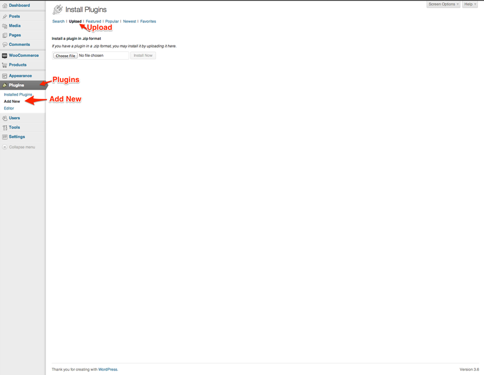
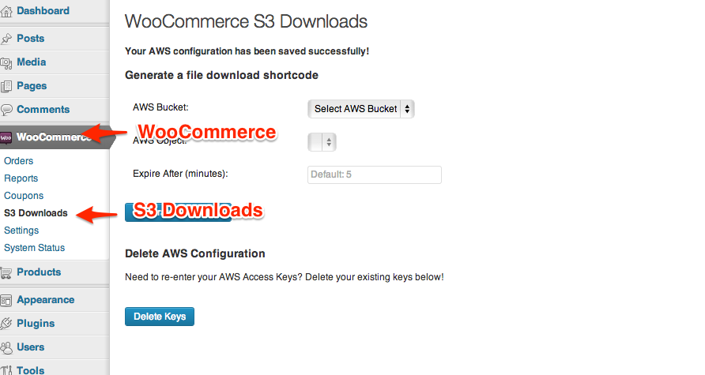

WooCommerce Amazon S3 Downloads by NuclearThemes, Version 1.0
WooCommerce Amazon S3 Downloads
Created: 05 August, 2013
By: NuclearThemes
Support: via NuclearThemes
Thank you for purchasing this plugin. If you have any questions that are beyond the scope of this help file, please feel free to email via my user page contact form here. Thanks so much!
Table of Contents
- Installation
- Amazon S3 and Uploading
- Configuring the plugin with Amazon S3
- Generating a shortcode
- Using shortcodes with a product
A) Installation - top
This plugin requires WooCommerce. If you don't already have WooCommerce installed, please visit the WooCommerce homepage. There you can download the latest version and find help to setup the plugin.
Installation
- Download the plugin ZIP package from CodeCanyon.
- In the WordPress admin, go to Plugins -> Add New -> Upload.
 - Press Choose File. Select the ZIP file you downloaded from CodeCanyon and press Install Now.
- Activate the plugin.
B) Amazon S3 and Uploading - top
Important: Please make sure that your AWS Bucket Name doesn't contain any capital letters and your object (file) name doesn't contain spaces! Spaces can be replaced with underscores or dashes.
If you already have an Amazon S3 account and you're familiar with the process of uploading files you can skip to the next step.
To use this plugin you will need an Amazon S3 account. Please sign up to Amazon S3 by going to http://aws.amazon.com/s3.
Uploading files to Amazon S3
- Once you have an Amazon S3 account, go to your Amazon S3 control panel.
- Click "Create Bucket".
- Give your Bucket a unique name. Optionally select a different region. Click create
- Click your newly created bucket.
- Click Upload. Select the files you want to upload and then press Start Upload.
- Your uploaded file(s) will appear inside your bucket.
C) Configuring the plugin with Amazon S3 - top
To start using the plugin you will need to enter your Amazon AWS Access Keys.
If you don't already have an Amazon AWS account, please refer back to B) Amazon S3 and Uploading
- In the WordPress admin, go to WooCommerce -> S3 Downloads.
- Retrive your Access Keys by going to https://console.aws.amazon.com/iam/home?#security_credential
- Click Continue to Security Credentials

- Expand "Access Keys" (by pressing the "+" button). Press Create New Root Key.
- Download your Key File by pressing Download Key File.
- Click Continue to Security Credentials
Upload CSV File
As of version 1.1 the process of configuring the plugin has been made easier. You can now upload your key file to the plugin.
Alternatively - Enter Keys Manually
- Open the CSV file you downloaded and copy your keys. Only copy the actual keys (after the equals sign). In the screenshot the keys have been altered for security
- Paste your keys into the plugin. Press Save Keys.
- You'll be presented with a new plugin screen.
If you made a mistake when entering your keys you can easily remove them and start again. Just press Delete Keys.
D) Generating a shortcode - top
Once you've configured the plugin you're ready to start generating shortcodes. Shortcodes are intended to be used on WooCommerce products but they can be used anywhere where shortcodes are allowed. e.g. Posts or Pages
The shortcode uses the bucket name, the object (file), and an expiry (set in minutes with a default of 5) to dynamically create links to your Amazon S3 File(s). When the link expires it can no longer be used to access the file. This is helpful in preventing link sharing.
Using the shortcode generator
- Go to WooCommerce -> S3 Downloads in the WordPress admin
 - Select a bucket from the "AWS Bucket" dropdown. If no buckets are shown then check that you've added a bucket in Amazon S3 and entered the correct access keys
- Once a bucket has been selected the "AWS Object" dropdown will show all available files in that bucket. Select the file you uploaded.
- Optional: By default the link will expire after 5 minutes. Use the "Expire After (in minutes)" box to change how long you want the link to remain valid for.
- Press Generate Shortcode. Copy the shortcode and move on to the next section.
Shortcode format
If you don't want to use the generator to create shortcodes it's easy to make them yourself. The shortcode has three attributes.
- bucket - The name of the S3 bucket
- path - The path to the file in the bucket
- expiry - Minutes until the link expires (defaults to 5)
To create your own shortcode use the template below
[wc_s3_download bucket="YourS3Bucket" path="PathToFileInBucket" expiry="MinutesToExpire(number)"]
E) Using shortcodes with a product - top
Using the shortcode you generated in the last section we're going to setup a product using it.
- In the WordPress admin, go to Products -> Add Product.
- Enter a title and description for your product. Tick the "Downloadable" checkbox. Enter a price (in the screenshot I've entered 0 making the product free). Finally paste the shortcode in the textarea titled "File paths (one per line)".
- Press Publish.
Once again, thank you so much for purchasing this theme. As I said at the beginning, I'd be glad to help you if you have any questions relating to this theme. No guarantees, but I'll do my best to assist. If you have a more general question relating to the themes on ThemeForest, you might consider visiting the forums and asking your question in the "Item Discussion" section.
NuclearThemes